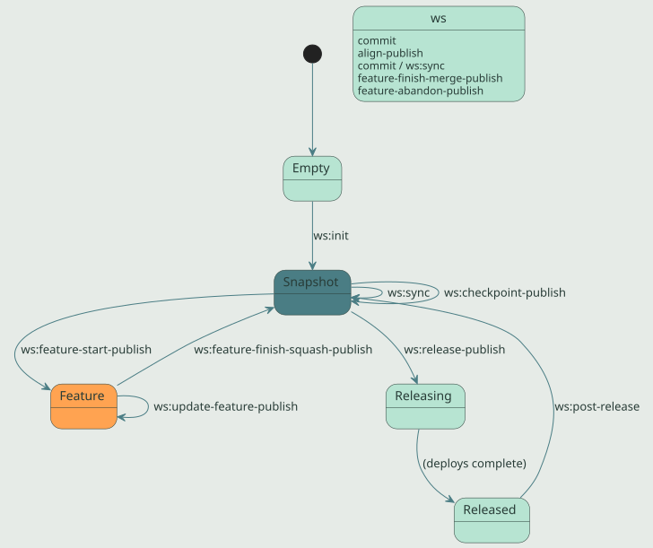

IKE Platform
IKE Workspace Maven Plugin 73-SNAPSHOT
-
Home
- Documentation
Workspace Lifecycle
This page tells the story of how ws:* goals fit together day-to-day. For a per-goal reference, see ws:* Goal Reference[1].
The mental model is a finite state machine. A workspace is in one of five states at any moment, and ws:* goals are the named transitions between them. Knowing where you are and where you want to be tells you which goal to invoke next.
State machine

The five states:
| State | Meaning |
|---|---|
| Empty | Filesystem has no workspace.yaml. Bare git operations only. |
| Snapshot | Workspace cloned and aligned. All subprojects on main branch with *-SNAPSHOT versions. The default daily-driver state. |
| Feature | A coordinated feature/<name> branch active across N subprojects with branch-qualified SNAPSHOT versions. |
| Releasing | A release is in flight. release/<version> branches exist; v<version> tags may be created but not yet pushed. |
| Released | All subprojects in the release set are tagged at v<version>, deployed to Nexus, and merged back to main. |
Most days you are in Snapshot moving in and out of Feature. The Releasing state should be transient — a few minutes between ws:release-publish and the moment everything is on Nexus and pushed. If you find yourself in Releasing for longer (a release was interrupted), ws:release-status is the diagnostic to run first.
Day one: bootstrapping a workspace
A workspace is a directory containing workspace.yaml and one or more cloned subproject repositories. The most common bootstrap is "clone the workspace meta-repo, then clone each subproject described inside it":
git clone git@github.com:IKE-Network/ike-example-ws.git
cd ike-example-ws
mvn ws:scaffold-init # clone every subproject in workspace.yaml
mvn ws:overview # see what you havews:scaffold-init is idempotent — it can be re-run any time a new subproject is declared in workspace.yaml to clone the declared-but-missing one. If workspace.yaml is absent, the goal also bootstraps a minimal manifest from the current directory.
If the subproject directories already exist on disk (e.g., Syncthing carried them over from another machine without their .git/ directories), ws:scaffold-init initializes git in place rather than cloning, preserving the working tree.
To add a new repo to an existing workspace:
mvn ws:add -Drepo=git@github.com:IKE-Network/new-component.gitTo start a workspace from scratch in a fresh directory, see Workspace Getting Started[2].
Daily flow: stay in sync
Once bootstrapped, the daily rhythm is sync → work → commit → sync:
mvn ws:sync # pull, refresh-main, push (everything)
# ... edit code ...
mvn ws:commit -Dmessage="..."
mvn ws:syncws:sync replaces the older two-step ws:pull followed by ws:push. Between the two, it also calls ws:refresh-main so local main stays current with origin/main even on machines where Syncthing carries an out-of-band checkout. Use the standalone ws:pull, ws:push, and ws:refresh-main only when you specifically want one of the three operations alone.
After ws:sync, run ws:overview if you want a one-screen status report (manifest + graph + git state + cascade impact).
Feature flow: coordinated branches
A feature branch in a workspace is coordinated — same branch name in N subprojects at once, with branch-qualified SNAPSHOT versions that resolve internally. This lets you make changes that touch multiple repos and verify them locally before merging.
mvn ws:feature-start-publish -Dfeature=my-thing
# Creates feature/my-thing in every subproject with a branch-qualified
# SNAPSHOT version (e.g., 1.2.0-my-thing-SNAPSHOT).
# Inter-subproject deps auto-align so the branch starts consistent.
# ... edit code ...
mvn ws:commit -Dmessage="my work in progress"
mvn ws:push # publish the feature branch
# Periodically catch up with main:
mvn ws:update-feature-publish
# When done, choose merge or squash:
mvn ws:feature-finish-squash-publish -Dfeature=my-thing -Dmessage="Ship it"
# OR for long-lived branches:
mvn ws:feature-finish-merge-publish -Dfeature=my-thingSquash is the default and the recommended path for most features — the feature branch’s commit history is disposable, and main gets one clean commit. Use feature-finish-merge only for long-lived feature branches where you want individual commits visible on main.
If a feature should be discarded:
mvn ws:feature-abandon-draft # preview what would be lost
mvn ws:feature-abandon-publish -Dfeature=my-thing # delete after confirmationTo switch between feature branches without releasing:
mvn ws:switch-publish # interactive menu
mvn ws:switch-publish -Dbranch=feature/another # non-interactiveRelease flow: coordinated multi-repo release
A workspace release tags, deploys, and pushes every subproject in the release set in topological order. The release set is the union of two groups:
- source-changed — subprojects with unreleased commits since their last tag.
- cascade-pulled — subprojects whose upstream got released, so they need a new release that consumes the new upstream version, even if they themselves had no commits.
Before kicking off a release, run inspection goals:
mvn ws:overview # broad health check
mvn ws:scaffold-draft # convergence drift: manifest, fields, parent, scaffold, alignment
mvn ws:verify-convergence # transitive dep convergence
mvn ws:lint # preflight hygiene gateThen draft the release to see the plan:
mvn ws:release-draft # writes ws꞉release-draft.mdReview the draft. If it looks right, execute:
mvn ws:release-publishPer-subproject catch-up alignment runs immediately before each subproject’s release: every workspace-internal upstream version reference (parent, version property) is bumped to the upstream’s just-released version. This means a downstream component released second sees the upstream’s actual release, not the snapshot it had when the release started.
After release, bump everything to the next development version:
mvn ws:post-release -DnextVersion=22-SNAPSHOTIf something goes wrong mid-release, do not run release-publish again until you know what state you’re in:
mvn ws:release-status # read-only diagnosticThe output gives you a punch list per subproject and a recommended next action — typically pointing at IKE-RELEASE-RECOVERY.md.
Checkpoints: tag without releasing
Sometimes you want to mark a workspace state for reproduction without running a full release — no POM version changes, no deploys, just git tags. Use ws:checkpoint:
mvn ws:checkpoint-draft -Dlabel=before-refactor
mvn ws:checkpoint-publish -Dlabel=before-refactorThe publish variant aligns first so the checkpoint captures a consistent inter-subproject state. TeamCity watches for checkpoint tags on the workspace repo and runs CI verification — the artifact side stays SNAPSHOT.
Checkpoints are intermediate; they are not released to Nexus and should not be consumed as a stable version by anything outside the workspace.
Alignment: the daily safety net
Before any state-changing operation (especially feature-start or release), the workspace must be aligned — every workspace-internal dependency reference must point at the version another workspace subproject actually has. Drift causes builds to resolve a stale artifact from Nexus instead of the local subproject.
ws:align-draft previews the changes; ws:align-publish applies them. Both are safe and idempotent; run them whenever you’ve manually edited POM versions or when a release left the workspace in a mixed state.
mvn ws:align-draft # preview
mvn ws:align-publish # applyTo cascade a parent POM bump (e.g., ike-parent 19 → 20) across the workspace, use the convergence pattern:
# Recommended: bump to the latest tested-together foundation
# (parent + standard properties together, plus scaffold +
# alignment in the same pass).
mvn ws:scaffold-draft
mvn ws:scaffold-publish
# Override case: pin the parent cascade to a specific non-current
# version (reproducibility test, partial-cycle rollback, etc.).
mvn ws:scaffold-publish -DparentVersion=20ws:scaffold-publish drives the ReconcilerRegistry — it converges parent version, denormalized YAML fields, scaffold conventions, and inter-subproject alignment in a single operation. Each reconciler can be individually disabled (-DupdateParent=false, -DupdateFields=false, -DupdateScaffold=false, -DupdateAlignment=false) when you need to narrow the scope.
For the rare case where `workspace.yaml’s recorded branch and the on-disk git checkout have drifted apart (e.g., a manual rebase moved some subprojects to a branch the YAML doesn’t know about), use the recovery goal:
mvn ws:reconcile-branches-draft # preview the YAML edits
mvn ws:reconcile-branches-publish # applyThis is recovery / rare-use, separated from ws:align per ike-issues#200’s two-axis split: POM versions vs. git branches are fundamentally different things and should not share a single "realign" verb.
Inspection always
Read-only goals are safe at any time. They are the right starting point for almost any operation:
| Goal | When to reach for it |
|---|---|
ws:overview |
Default first command. Manifest + graph + status + cascade in one screen. |
ws:scaffold-draft |
Convergence drift report. Catches manifest drift, denormalized field mismatch, stale parent/scaffold, alignment skew — all in one pass. |
ws:verify-convergence |
Before a release. Catches transitive dep version conflicts. |
ws:lint |
Anytime. Surfaces hygiene problems (typo’d jvm.config, leaking SNAPSHOT properties). |
ws:graph |
When the dep graph is what you want to see. -Dformat=dot for Graphviz. |
ws:release-status |
Suspicious of an in-flight release. Diagnoses what’s left to do. |
ws:report |
Browse the markdown reports every other ws goal writes. |
Upgrades: keeping standards current
For routine "bring this workspace forward to the latest tested-together foundation" work — parent version, standard properties, gitignore, hooks, IDE configs, .mvn/maven.config — use the convergence pattern:
mvn ws:scaffold-draft # drift report
mvn ws:scaffold-publish # applyThe ScaffoldConventionReconciler handles the scaffold layer (gitignore, hooks, .mvn/maven.config, IDE settings) and the ParentCascadeReconciler handles the parent version — both in the same pass, both driven by the scaffold manifest pinned at ike-tooling release time.
Both goals are idempotent and safe to re-run. POM edits go through OpenRewrite — never sed/regex.
When git fights back
A few situations need git directly rather than ws:*:
- Resolving a real merge conflict — fix files,
git add,git commit, then re-run the workspace goal. - Discarding local changes in one subproject —
git checkout .orgit reset --hardin that subproject only. - Inspecting one repo’s history —
git login that subproject.
But for any workspace-wide git operation, prefer the ws:* goal — the topological ordering, per-goal reports, and consistent error recovery are why the plugin exists.
See also
- ws:* Goal Reference[1] — full goal-by-goal docs.
- Workspace Getting Started[2] — hands-on first-time setup.
- Workspace Plugin Home[3] — module overview.